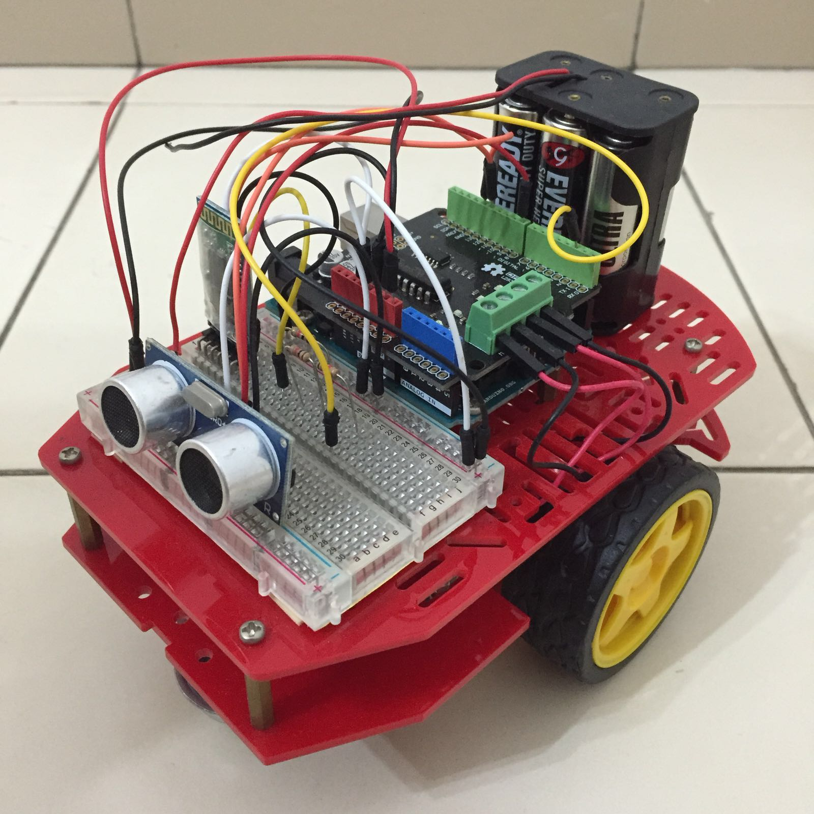

DaeDae
An Arduino remote control rover project using Bluetooth. Project SOC
A school project that uses Facebook Graph API to retrieve information. Retrieved information is then presented using relevant methods.Notable features:
- Identifying and plotting friend circles on a graph
- Simple sentiment analysis of Facebook posts
Technologies used:
- Facebook Graph API
- MySQL
- GraphViz